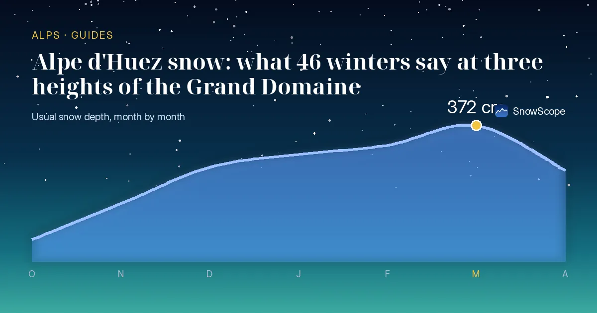

Alpe d'Huez snow: what 46 winters say at three heights of the Grand Domaine
Alpe d'Huez stretches from 1124 m in the valleys of Oz and Vaujany to 3306 m on the Pic Blanc. That is 2182 m of vertical, 163 km of runs and 82 lifts across the Grand Domaine. Snow depth here depends entirely on where you stand: the base and the summit live in different winters.
See the live snow forecast for Alpe d'Huez Grand Domaine in the SnowScope appSnow depth, powder alerts and the 3D map, free.

Three zones, three snow worlds
The resort splits into three distinct snow bands. At the base (1124 m), winters are short and shallow: a typical peak reaches only 52 cm, with lows of 14 cm and highs of 78 cm across the 46-winter record. The runs back to the valley need grooming machines to stay open.
Mid-mountain (2215 m), where the main slopes and plateaus lie, sees a usual peak of 184 cm. The top (3306 m), home to the Sarenne and glaciers, reaches 440 cm. Each metre of elevation gain matters: 100 m higher means meaningfully deeper snow for longer.
November to March: when each month suits different heights
November leaves the base almost bare (a typical 2 cm) but already deposits 20 cm at mid-mountain and 60 cm on top. For early-season skiers, the choice is clear: aim high. December deepens the spread: 15 cm at base, 62 cm mid-mountain, 158 cm at top. Nine of ten Decembers bring at least 31 cm to mid-mountain, though nine of ten also stay below 105 cm there.
January and February are when mid-mountain comes alive. January holds a usual 110 cm at mid-mountain and 258 cm at top; February reaches 150 cm mid-mountain and 293 cm at top. March is mid-mountain's deepest month at 154 cm, while the summit peaks in April at 372 cm. This late-season depth at the top is what powers Alpe d'Huez's spring reputation.
The reliability question: which week holds 50 cm
Fifty centimetres of snow matters for good skiing. At mid-mountain, 50 cm or deeper lies on the ground in 18 of the 46 past winters for all 18 weeks from early February through mid-May, and in 23 past winters (half of them) for a continuous 23-week window. The most dependable single week is ISO week 10 (early March), when mid-mountain sits at a usual 159 cm and no winter in the record has fallen below that benchmark.
At the top, 50 cm or more stays on the ground through 25 weeks in nine of ten winters. Week 16 (mid-April) is the most reliable week of the whole season up there, with a usual 380 cm depth across all 46 winters. By contrast, the base struggles: weeks with 50 cm at the base are rare enough that half of all winters see none at all.
Winter to winter: how deep does it get
Past winters show the range. At mid-mountain, the shallowest winter peaked at 134 cm, the deepest at 250 cm, around a typical 184 cm. At the top, lows touched 287 cm and highs reached 659 cm, typical 440 cm. Last winter (2025–26) peaked at 211 cm mid-mountain and 405 cm at top, both close to their long-term medians.
The trend over 46 years tilts downward at the top: the first 15 winters averaged 452 cm, the most recent 15 averaged 405 cm. At mid-mountain the picture is steadier, shifting from 186 cm to 200 cm. Snow days at mid-mountain fell from an average 231 per winter to 210.
The season from first snow to last
First snow at mid-mountain arrives by October 18 in half of the winters. Last snow lingers until June 9 in half of the winters. That is a typical 218 snow days at mid-mountain, or about seven and a half months. At the top the season stretches from late September (October 1 is the median first snow) through June 13, giving 232 snow days.
The base lives on a shorter calendar. First snow there settles by November 12 in half of the winters and melts by May 8 in half, giving only 159 snow days over the whole season and leaving machine-made snow essential from December through March.
Planning: which height, which month
December suits the high slopes: aim for the plateaus and the Pic Blanc if you are booking over Christmas. At the base and mid-mountain, groomers carry the season until January brings reliable depth to mid-mountain slopes. February and March are the safest months at mid-mountain for consistent conditions on a wide range of terrain.
Late April is the hidden gem. While most of Europe has moved on to summer, the top still holds 372 cm and every past winter has beaten 50 cm. Mid-mountain at week 16 (mid-April) sits at a usual 160 cm. Ski the high runs in the morning before spring sun softens the surface. The base by then is marginal and relies on shade and altitude.
Tips for skiers
- For December and January: ski the mid-mountain plateaus and high runs; the valley base runs depend on machine-made snow during these months.
- March is mid-mountain's deepest month (usual 154 cm) and April is the top's deepest (usual 372 cm): late season is not a retreat but a strategy.
- ISO week 10 (early March) at mid-mountain and ISO week 16 (mid-April) at the top are the most reliable single weeks of the season; plan a trip around either one.
- The base (1124 m) sees only 52 cm peak in a typical winter: treat valley runs as bonus terrain and aim for mid-mountain (2215 m) and above for your main skiing.
- Consult the official avalanche bulletin from Météo-France before skiing off-piste, especially on steep sectors accessed from the high lifts.
About these numbers
Resort snow depths are the deepest snow on the resort's upper slopes on the date shown; they are estimates for an area, not a measurement at one point. Forecasts can change. Always read the official avalanche bulletin before going off-piste.
Official avalanche bulletins: Météo-France – Bulletin d'estimation du risque d'avalanche
Cite this report
For research, teaching or the press: the numbers and charts are free to reuse under CC BY 4.0 with this citation.
SnowScope (2026), Alpe d'Huez snow: what 46 winters say at three heights of the Grand Domaine, https://snowscope.app/blog/en/2026/11/alpe-dhuez-enneigement-46-hivers-trois-altitudes.html, accessed 2026-11-22
SnowScope (Atlas Labs). (2026, November 22). Alpe d'Huez snow: what 46 winters say at three heights of the Grand Domaine. SnowScope snow reports. https://snowscope.app/blog/en/2026/11/alpe-dhuez-enneigement-46-hivers-trois-altitudes.html
BibTeX
@misc{snowscope2026alpedhuezenneigement46hi,
author = {{SnowScope (Atlas Labs)}},
title = {Alpe d'Huez snow: what 46 winters say at three heights of the Grand Domaine},
year = {2026},
month = nov,
howpublished = {\url{https://snowscope.app/blog/en/2026/11/alpe-dhuez-enneigement-46-hivers-trois-altitudes.html}},
note = {Published 2026-11-22 10:24 UTC; accessed 2026-11-22}
}· CC BY 4.0 · Methods, data and tools →
Alpe d'Huez Grand Domaine: snow and temperature by height, this winter vs last (tools) →
Follow Alpe d'Huez Grand Domaine
Free: a message when fresh snow is coming, and the forecast every morning.
More snow reports

Alps snow report, 21 November: Alpe d'Huez has 92 cm on upper slopes. Orelle leads the region with 136 cm. Fresh snow incoming by Tuesday.

Val Thorens leads with 143 cm of fresh snow in 72 hours as of 20 November. Alpe d'Huez forecast to gain 121 cm by 23 November.

La Grave has 171 cm on upper slopes today, which is 68% of normal for late November. The Alps saw sharp gains this weekend.